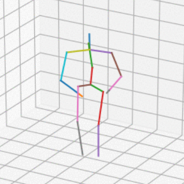

|
Carter Sifferman I am a Computer Science PhD student at University of Wisconsin - Madison, advised by Michael Gleicher and Mohit Gupta. My work utilizes low-level techniques from computational imaging to improve robot perception. I am most interested in time-of-flight proximity sensors for up-close and distributed robot sensing. Representative work is highlighted Email / CV / X (Twitter) / LinkedIn / Google Scholar / Github |
{kind=link}
Publications |
|
|
Using a Distance Sensor to Detect Deviations in a Planar Surface
Carter Sifferman, William Sun, Mohit Gupta, Michael Gleicher RA-L , 2024 / To Appear: ICRA , 2025 project page / bibtex / pdf By utilizing low-level time-of-flight info captured by an off-the-shelf miniature distance sensor, we can detect deviations in a planar surface over a wide field-of-view. |
|
|
Towards 3D Vision with Low-Cost Single-Photon Cameras
Fangzhou Mu*, Carter Sifferman*, Sacha Jungerman, Yiquan Li, Mark Han, Michael Gleicher, Mohit Gupta, Yin Li CVPR , 2024 project page / video / bibtex / dataset / pdf By modeling the image formation process and using a NeRF-like approach, we reconstruct 3D geometry from measurements of a miniature proximity sensor. |
|
|
IKLink: End-Effector Trajectory Tracking with Minimal Reconfigurations
Yeping Wang, Carter Sifferman, Michael Gleicher ICRA , 2024 bibtex / pdf A method for tracking end effector trajectories while taking minimal breaks to reconfigure the arm position. |
|
|
Unlocking the Performance of Proximity Sensors by Utilizing Transient Histograms
Carter Sifferman, Yeping Wang, Mohit Gupta, Michael Gleicher RA-L In Proc. ICRA , 2024 project page / video / bibtex / code / pdf Directly utilizing low-level information generated by optical time-of-flight sensors allows recovery of planar geometry and albedo from a single sensor measurement. |
 |
Exploiting Task Tolerances in Mimicry-based Telemanipulation
Yeping Wang, Carter Sifferman, Michael Gleicher IROS , 2023 bibtex / pdf Allowing a robot to move freely in non task-relevant degrees of freedom improves the telemanipulation experience. |

|
Geometric Calibration of Single Pixel Distance Sensors
Carter Sifferman, Dev Mehrotra, Mohit Gupta, Michael Gleicher RA-L in Proc. IROS , 2022 project page / video / bibtex / code / pdf A depth sensor attached to a robot arm can be extrinsically calibrated relative to that robot arm using only an unknown planar surface. |
|

|
Depth sensor-based in-home daily activity recognition and assessment system for stroke rehabilitation
Zoë Moore Carter Sifferman, Shaniah Tullis, Mengxuan Ma, Rachel Proffitt, Marjorie Skubic Bioinformatics and Biomedicine (BIBM), 2019 bibtex / pdf A system for automatic assessment of stroke patient recovery (e.g. range of motion), using an in-home depth camera. |
Other Work |
|
|
A Review of Scene Representations for Robot Manipulators
Carter Sifferman bibtex / pdf A literature review of 3D scene representations used by mobile manipulators. Completed as part of my PhD Qualifying Exam |